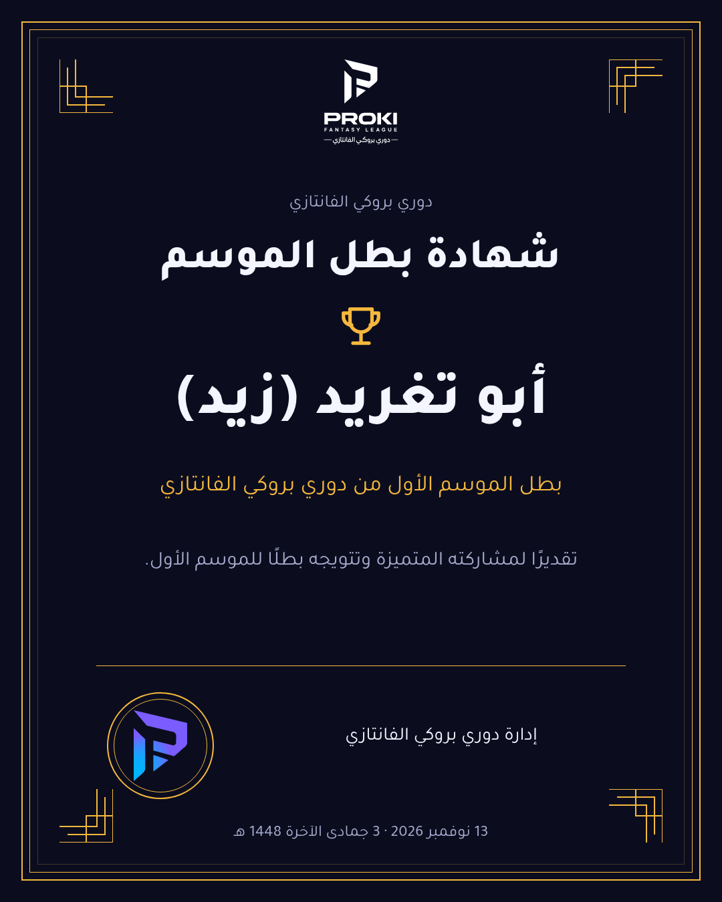
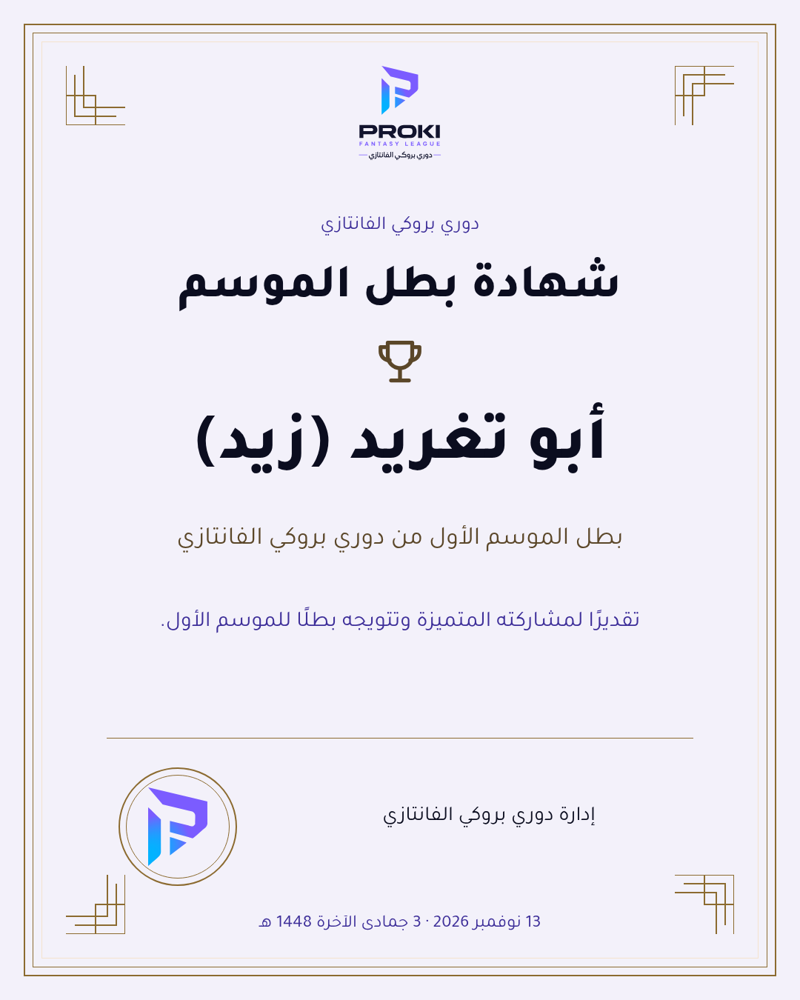
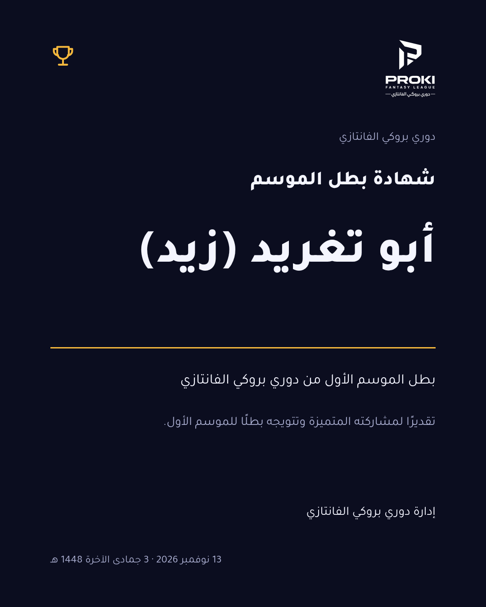
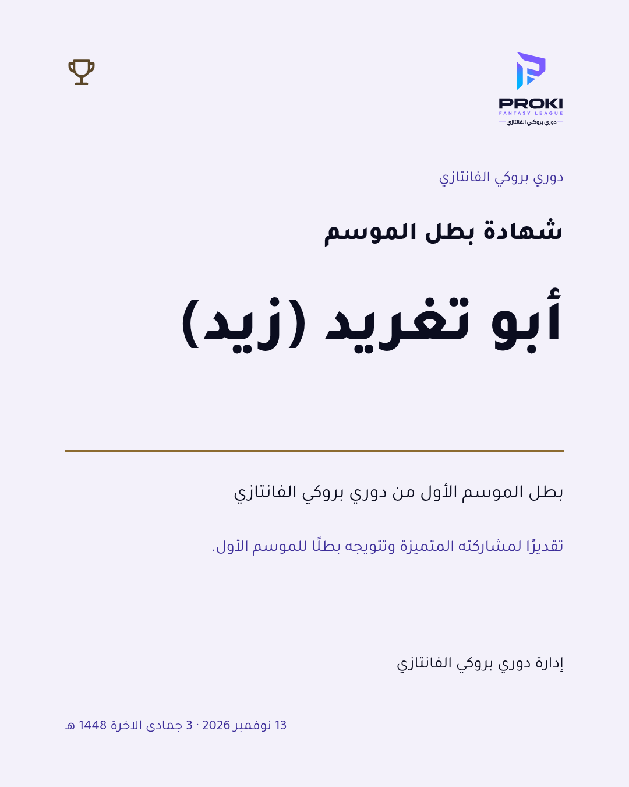
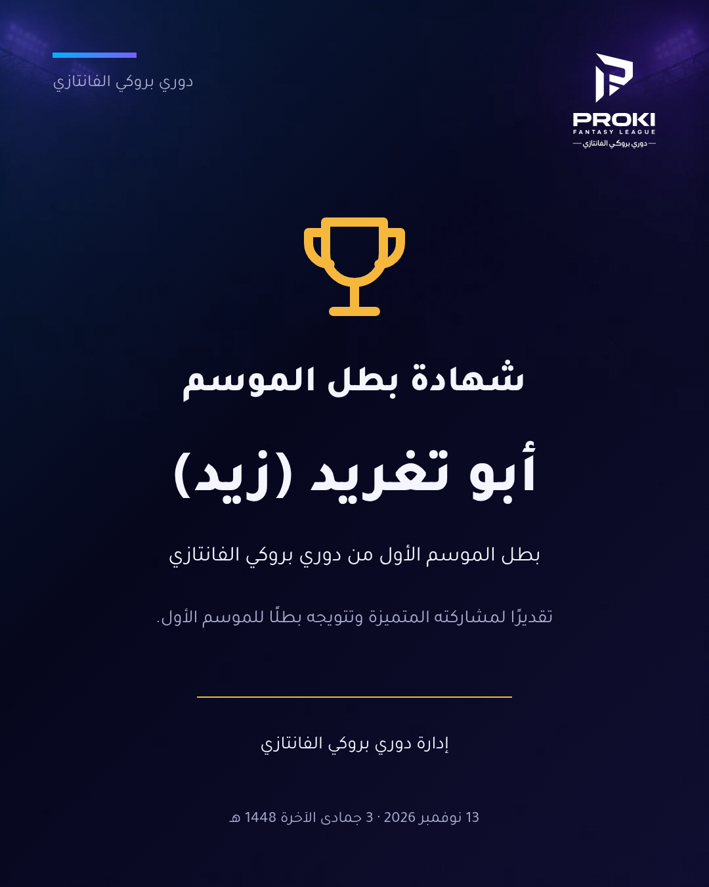
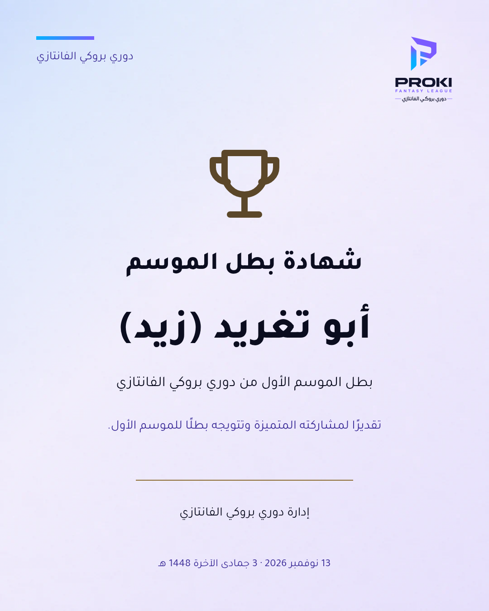

شهادة البطل — ثلاثة اتجاهات
أفكار للاختيار قبل التنفيذ النهائي. كل صورة بعرض390px، والنصوص والاسم واللقب متطابقة بين الاتجاهات.
التوصية: «الاسم أولًا»؛ يمنح اسم البطل المساحة الأوضح عند مشاركة الشهادة في واتساب. الشهادة الحالية لم تتغير.
أ · ختم البطولة
اتجاه رسمي بإطار هندسي متدرج وختم يحمل علامة P الأصلية. الاسم في المركز، والتوقيع جزء مستقل في أسفل الشهادة.




ب · الاسم أولًا
اتجاه طباعي بسيط، باسم كبير ومحاذاة عربية واضحة وفراغات واسعة. خط ذهبي واحد يفصل التكريم عن صفة البطولة والتوقيع.




ج · ليلة التتويج
اتجاه رياضي بكأس كبير وخلفية الملعب ولمسة من تدرج الهوية. يتوسط الاسم أسفل الكأس، وتبقى النصوص الرسمية موجزة.




لا نقاط أو نتائج إضافية؛ أندية بطل الموسم الأول غير مثبتة في المصدر، لذلك لم تُضف. تاريخ الإصدار يُصاغ بالدالة المعتمدة formatDate.